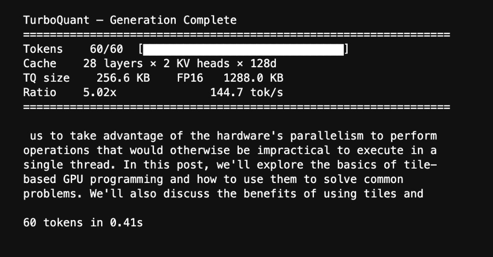

1,288 KB → 257 KB. Same text out.
TurboQuant on Blackwell
A CUDA-native KV cache compression engine built with cuTile, running on NVIDIA's Blackwell B200.
What is this?
During LLM inference, the KV cache is the single biggest memory bottleneck. At 8,000 tokens on a 3B-parameter model, you're looking at nearly 300 MB of cached keys and values. The GPU spends over 90% of wall-clock time just waiting for that data to load from memory.
TurboQuant (Google, ICLR 2026) compresses the cache down to 3 bits per coordinate. That's 5× less memory and 5× faster loads, with attention scores that stay mathematically unbiased.
I implemented TurboQuant as a set of custom CUDA kernels using NVIDIA cuTile and ran it end-to-end on a Blackwell B200 with Qwen 2.5-1.5B. The model generates coherent text from a fully compressed KV cache with near-perfect fidelity.
Pipeline
Contents
Chapter 1
The Algorithm
Random rotation, Lloyd-Max quantization, and QJL bias correction. How TurboQuant compresses KV cache to 3 bits with lossless attention.
Chapter 2
Kernel Architecture
Five cuTile kernel types, fused attention with on-chip decompression, online softmax, and Blackwell-specific optimizations.
Chapter 3
Results & Benchmarks
Compression ratios, attention quality metrics, latency benchmarks, roofline analysis, and live generation from compressed cache.
Try It Out
Links
GitHub Repo - Source code, setup instructions, and the full notebook.
Presentation Video - 5-minute walkthrough of the engine and results.
TurboQuant Paper - Zandieh et al., arXiv 2504.19874 (ICLR 2026).
Live Generation
Qwen 2.5-1.5B generating text from a TurboQuant-compressed KV cache on the B200. The value cache is decompressed from 3-bit indices; the model produces coherent output at 144.7 tok/s with a 5.02× compression ratio.
